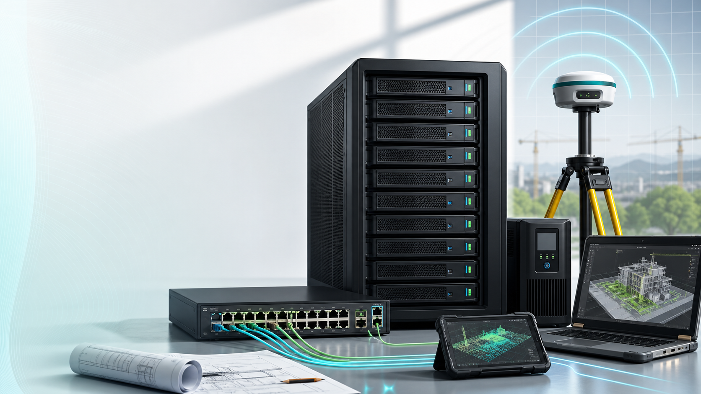

Для геодезистов
Ровер сохраняет съемку на сервер, камеральщик сразу забирает файлы, проверяет и выдает результат.
Серверы для полевых и камеральных команд
Собираем и пересобираем серверы с большим хранилищем, резервированием, защищенным доступом из любой точки. Полевик снимает, камеральщик сразу видит данные, проектировщик и стройка работают с актуальной версией.

Оффер
Ровер сохраняет съемку на сервер, камеральщик сразу забирает файлы, проверяет и выдает результат.
Отдельные права и версии для проектов, бухгалтерии, производства, строительства и руководства.
Расшаривание файлов подрядчикам и заказчикам без пересылки архивов и хаоса в мессенджерах.
Кастомные сборки и стыковка с 1С, Archicad, Revit, Metashape и BIM-процессами.
Пакеты по терабайтам
Стартовая сборка на Ryzen 5 5600X, 32 ГБ RAM, NVMe 1 ТБ и HDD 8 ТБ. Это дешевый вход без большого запаса на будущий апгрейд; для 48+ ТБ закладываем усиленную платформу.
от 199 000 сом
от 299 000 сом
от 399 000 сом
Окупаемость
Google Workspace дает 2-5 ТБ на пользователя в старших бизнес-планах, а Yandex Cloud считает хранение, операции и исходящий трафик отдельно. Для геодезии, облаков точек и архивов это быстро превращается в постоянный ежемесячный расход вместо собственного актива.
Обычно закрывает малую полевую команду и архив съемок.
Окупаемость: 3-6 месяцевОптимально для геодезии, проектов, стройки и бухгалтерии.
Окупаемость: 4-7 месяцевДля облаков точек, Metashape, BIM-моделей и производства на усиленной платформе.
Окупаемость: 5-9 месяцевTelegram и WhatsApp
USB-флешки
переносные SSD/HDD
Dropbox, OneDrive и другие облака
Данные лежат у вас, быстро открываются на ноутбуках, компьютерах и планшетах, а команда работает с одной актуальной версией без пересылок, долгих загрузок и потери файлов.
Техническая схема
На вашем сервере разворачивается закрытое файловое хранилище, настраиваются пользователи, права, резервирование и удаленный доступ. На смартфоне или контроллере ровера синхронизируется папка экспорта Emlid Flow, LandStar, Survey Master, Magnet Field или другого полевого софта.
Сохраняет съемку, фото, точки или экспорт. Файл попадает в локальную папку и автоматически улетает на сервер при появлении интернета.
Получает уведомление о новых файлах, обрабатывает данные и сохраняет результат обратно в папку объекта.
Подключает DWG, DXF или облако точек как внешнюю ссылку. После обновления файла подоснова актуализируется.
Видит только папку выдачи: PDF, отчеты и исполнительные схемы без доступа к внутренним черновикам.
Геодезия в фокусе
Больше не нужно возить флешки, искать последнюю версию в чатах или ждать, пока полевик вернется в офис. Данные доступны мобильной команде, камеральщикам, BIM-специалистам и руководителю с контролем прав.
Загружает GNSS, фото, облака точек и исполнительную съемку.
КамеральщикСразу обрабатывает данные и возвращает результат в проект.
ПроектировщикБерет актуальные материалы для Revit, Archicad и BIM-модели.
ЗаказчикПолучает внешнюю ссылку только на разрешенные файлы.
Совместная работа
Опыт UstaBIM по совместной BIM-работе: команды в офисе, на площадке и в разных городах работают в единой среде, где есть актуальная версия, удаленный доступ, контроль данных и поддержка.
Клиенты и опыт
Берем практику внедрения Revit Server, Archicad Teamwork и серверной среды для компаний, которым важны актуальные данные и стабильный доступ.
Сертифицированный главный архитектор, Бишкек
Установили сервер с Archicad Teamwork и Revit Server. Архитекторы и инженеры работают в едином пространстве: файлы синхронизируются, ничего не теряется и не дублируется.
Генеральный директор, Москва
Для большой удаленной BIM-команды стабильная совместная работа стала необходимостью. Сервер дал общий контур для Revit и доступа из разных регионов.
Генеральный директор
На крупном объекте команда работала круглосуточно: проектировщики, стройка и смежники запрашивали актуальные данные. Сервер помог держать одну версию и не терять правки.
Команда работает не с копиями файлов, а с актуальными данными на сервере.
Офис, стройка, поле и подрядчики подключаются из разных локаций.
Права, версии и резервирование снижают риск случайной потери данных.
Больше услуг BIM
SCO Shield хранит данные и координирует команду, но обработка начинается с полевого софта и заканчивается архитектурным проектом. Посмотрите все услуги UstaBIM: от GNSS-оборудования и обучения до BIM-внедрения и совместной работы в Revit и Archicad.
GNSS-ровер, планшеты, контроллеры и кабели для полевых работ.
СъемкаАренда оборудования и услуги профессиональной съемки.
ОбработкаОблака точек, ортофото и топографические планы.
BIMRevit, Archicad, совместная работа и интеграция данных.
Как запускаем
Смотрим объемы, скорость сети, отделы, роверы и текущий сервер.
Добавляем 8 ТБ диски, резервирование, охлаждение, UPS и сетевую часть.
Разводим права, версии, внешние ссылки, бэкап и рабочие папки отделов.
Стыкуем сервер с 1С, Archicad, Revit, Metashape и рабочими процессами.
Заявка
Напишите объем данных, сколько людей работает в поле и офисе, какие программы нужно связать и нужен ли доступ заказчикам.